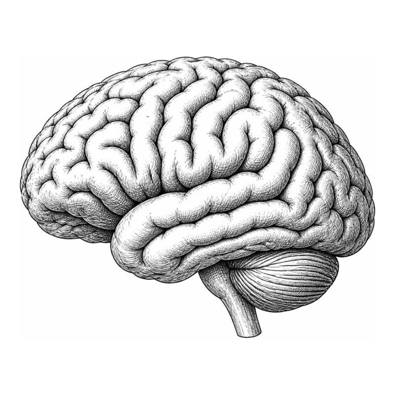

OPEN SOURCE · WEBGL2 · AGENT SKILLS
Every grain
tells a story.
A little ink. A little depth.
Thousands of grains, coming to life.
Move your cursor. Watch the perspective shift.

Gathering grains…
01 — 04 / LIVE CANVAS
A SMALL EXPERIMENT
Your words.
A thousand possibilities.
Type something and let it take shape.
ONE PROMPT. YOUR NEXT CREATION.
Take the sand with you.
Make original artwork and build your own animation in Codex.
Two skills, example assets, and the code to make it happen.
Ideas deserve a place to grow.
Explore the product behind this experiment.
Discover Linkly AI ↗